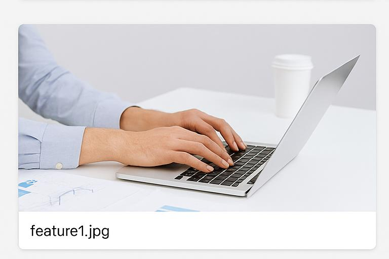

Desarrollo Web
HTML, CSS, JavaScript y proyectos React sencillos.
Desarrollador FullStack en formación — proyectos reales con HTML, CSS y JavaScript.
Ver mis proyectosHTML, CSS, JavaScript y proyectos React sencillos.
APIs REST Node/Express, bases de datos SQL/NoSQL.
Vercel/GitHub Pages y deploy de backends en Render/Railway.
Soy Kobac J. Faiffer — desarrollador FullStack en formación. Me apasiona convertir ideas en productos con código limpio y enfoque práctico.
Contactar